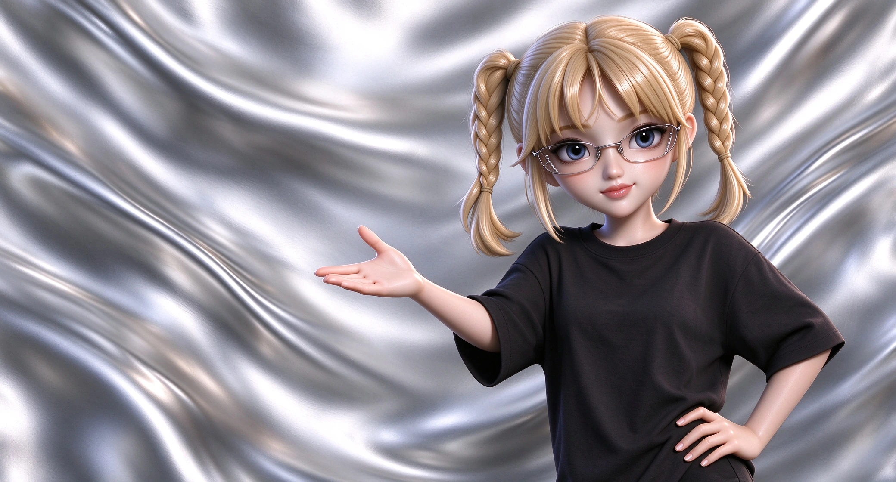

INDEPENDENT DESIGNER用好奇心，回应这个世界。
01 / A FIRST HELLO
把藏不住的好奇，做成一眼就记住的设计。
设计始于一次认真看见。欢迎走进我的视角。
02 / FROM SPARK TO FORM
正在读取个人介绍。
让作品先开口，也让下一次相遇有了期待。
正在读取作品。
移动鼠标，打个招呼。向下滚动 · 展开故事↓
请启用 JavaScript 以体验滚动叙事。也可以直接观看介绍视频 ↗